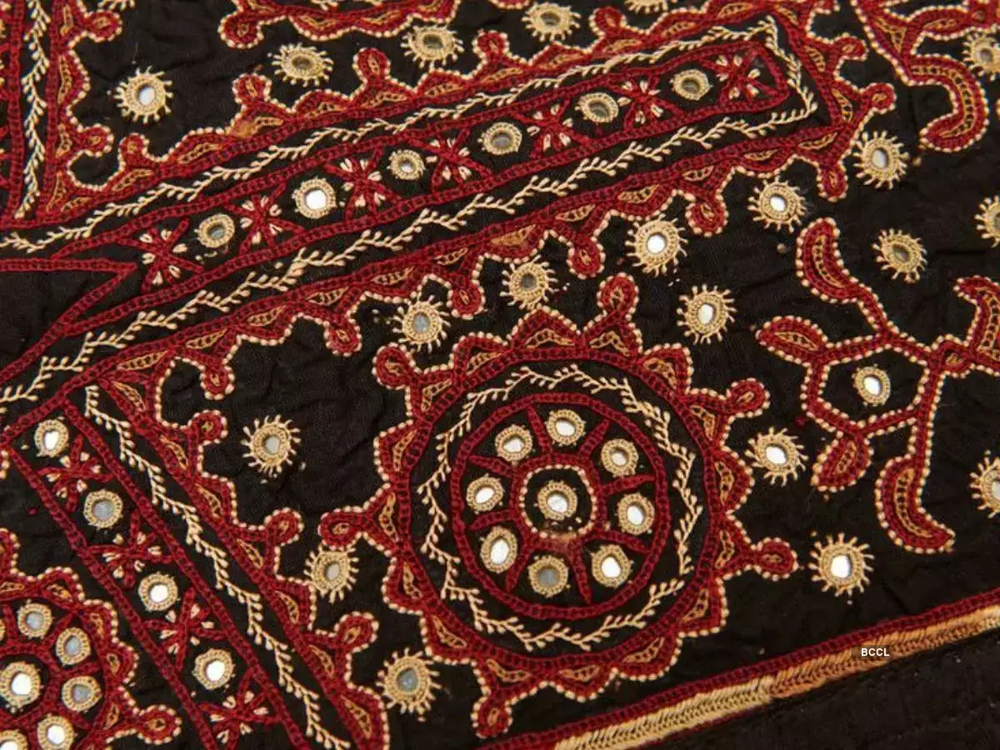
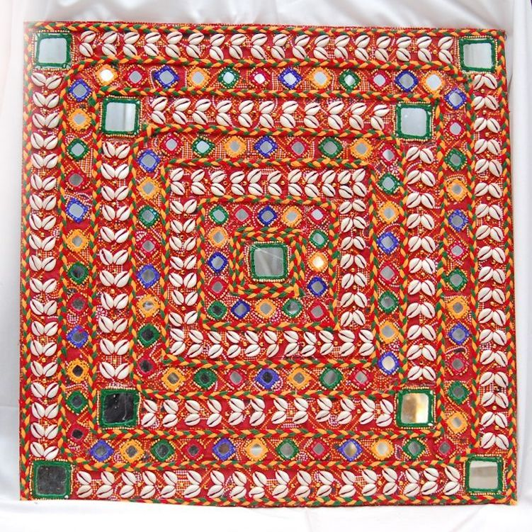

English Integrated Project Term - 2

Ila Sachani was born in Amreli, Gujarat into a farmer's family. She was born with her hands hanging loose by her sides. Unlike other children, she could not use her hands in the usual way.
Ila’s mother and grandmother who were skilled in the traditional art of Kathiawar embroidery encouraged her to overcome her challenge by embroidering using her feet and decided to share this art with Ila. They taught her to create many beautiful patterns using her feet. Ila accepted the challenge with determination. Her parents also helped her learn to do things with her legs, like eating and combing her hair. Ila became an expert at a young age in threading a needle. Her younger brother and sister helped her too. She learned many styles, even from outside Gujarat like Kachhi, Kashmiri, Lucknawi and others.
At first, Ila crafted fine designs only for her family and friends. Soon, the people in the village too discovered Ila’s special skill and the admiration for her work began to spread. Soon her talent and special skill reached the government's office in Surat and they were impressed by her work. They decide to display some of her samples of embroidery at a state exhibition. Then people started to observe the beauty woven by her feet at the state exhibition and readily purchased the creations which made her famous. Ila's popularity encouraged her to also participate not only within state exhibitions but also at the national level. Her work also allowed her to win several awards and honours including The President's Medal not just for her art but also the willpower and creativity that her work showed. A woman who was a farmer's daughter now is a celebrated artist. She not only earned a regular income as it was her skill but she also enjoyed doing her work. Through her creations she also proved that challenges can be turned into victories with focus, hard work, positivity and never giving up. Her embroidery which is created with her feet, reminds us that art has the power to rise above physical boundaries and touch the soul.
In Moti vavdi which is located in Bhavnagar, Gujarat,there is a tiny room where we will see lots of bright colours including lovely things like cushions, bedcovers, pillows and more with beautiful designs. These are all made by Ila Sachani who is a wonderful lady with a big smile using a shiny needle and creates these designs and still continues to make them.
 |
 |  |
Ila Sachani |
Kathiawar Embroidery |
Kacchi Embroidery |